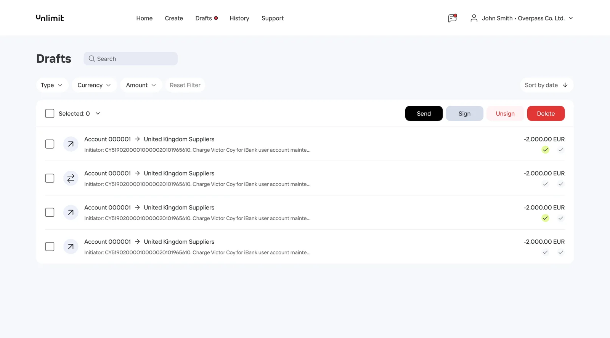
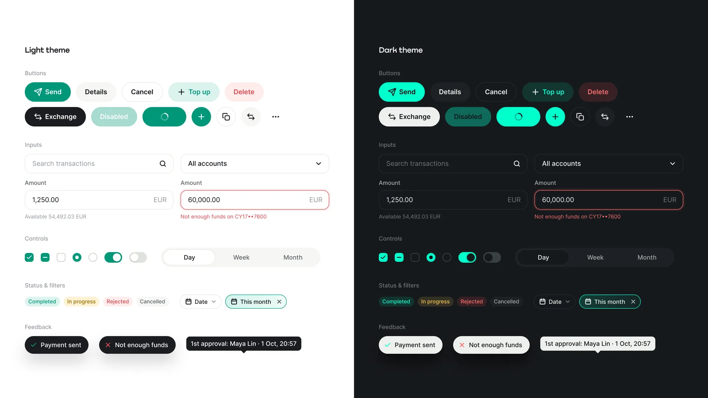
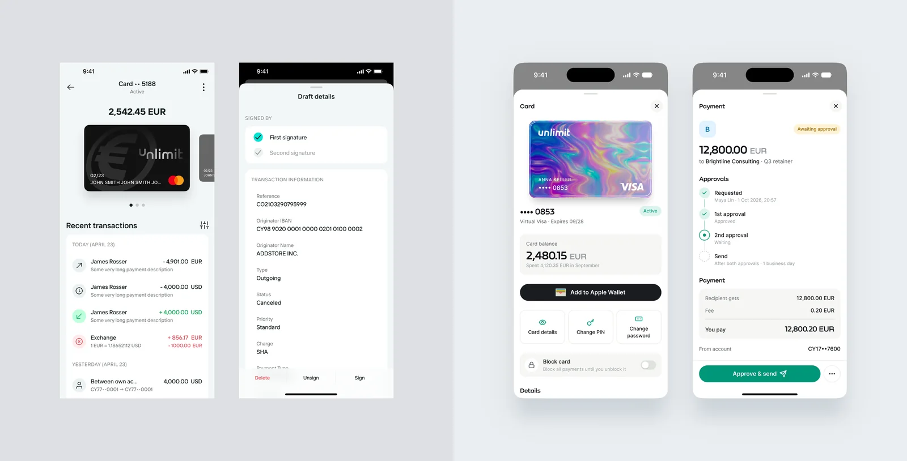
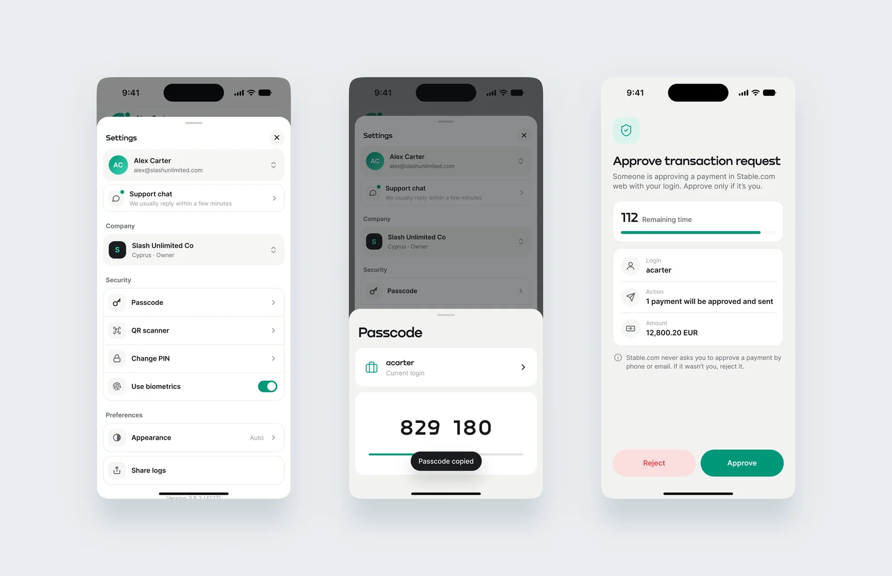

Unlimit Accounts
Redesigning a B2B bank on a design system: from an audit of the old backend to a phone that signs every payment.
- Role
- Product Designer
- Platforms
- Web and mobile app
- Year
- 2025–2026
- Company
- Unlimit
01 — Before
A powerful bank in an awkward wrapper
A B2B bank is more complex than a retail one. A payment can’t simply be sent: it is created, then it collects two signatures, signature A and signature B, and only then goes out. Behind this sits a model of roles and access rights: who creates, who signs, who can only view. Add multi-currency accounts and cards, and you get a product where every interface mistake costs the client money and time.
The old interface technically handled all of this, but it looked dated and did a poor job of explaining what was going on. Clients couldn’t tell what stage a payment was at or whose signature was needed next, and their questions piled up with support managers. The data confirmed it: the old interface scored 58 out of 100 on SUS against an industry average of 68, and one client in seven contacted support every month. The job wasn’t to refresh the visuals. It was to make complex logic clear, without losing a single scenario on the way, and to prove the result with metrics.

02 — Research
First, understand what already works
I started with an audit, not with screens. I went through the old bank’s backend to see the real functionality: which operations, statuses and roles actually exist, not only the ones the interface shows. In parallel I talked to support managers, who see every day where clients stumble, and to the clients themselves.
The third source was product analytics. I broke down the funnels of the key scenarios, found the steps where people get stuck and matched them with the topics of support requests. Together with NPS, CSAT and SUS surveys, this gave us baseline KPIs, the starting point we later measured the redesign against.
The outcome was a set of functional requirements: a full map of what the bank can do, plus the changes users and support had been waiting for. This document became a shared language for design, engineering and business, and a safeguard against losing a critical scenario in the redesign. I came back to it at every step that followed.
03 — Solution
A design system as the foundation
To keep the redesign from turning into a repaint, I started with the design system: tokens, typography, components and patterns for banking scenarios, such as transaction tables, payment statuses, and amount and currency fields. Light and dark themes are built in at the token level, so every new screen works in both from day one.
The most unusual part was how the mockups came about. I built the design system together with an AI agent, and then the agent assembled every screen on top of it. I deliberately didn’t fix mockups by hand. When a screen came out wrong, I fixed the cause, the requirement or the component, not the symptom. That way every fix improved the whole system, not just one screen.

04 — Impact
Before → after
The new bank closed the pain points found in research, above all in the scenarios that are hardest for B2B. We measured the effect with product metrics, comparing the quarter before launch with the quarter after.

05 — Mobile
The second key to every payment
The mobile app was built in parallel on the same design system, and it has a special role. It works as the second authentication factor: to sign a payment, the user confirms it through a push notification. The balance matters here. Confirming should take seconds, yet before tapping, the person sees whose login it is, what will happen and the exact amount, with a timer running, so they never sign more than they meant to. Signing stopped being a bottleneck, which is one of the reasons CSAT grew.
The same app gives a one-time passcode for signing in on the web, and keeps the security settings in one place: passcode, QR scanner, PIN and biometrics. Beyond that, it holds what is handier in a pocket: accounts and cards, transaction history, notifications. Thanks to the shared component system, web and mobile look and behave like one product.

06 — Result
More than a redesign
The bank got a modern interface where complex B2B scenarios make sense without a call to support, and the team got a single source of truth for design and engineering. NPS rose from +12 to +38, and thanks to the design system new features reach clients three times faster.
Most importantly, the design system outgrew a single product. The onboarding system for new clients and the brand’s crypto products are built on it, so the project set the direction for the whole ecosystem.
- 01The web bank and the mobile app on one design system
- 02Light and dark themes out of the box
- 03A foundation for onboarding and crypto products
- 04Mockups assembled by an agent from the system and the requirements, with no drawing by hand
07 — Takeaways
What I took away
The project changed how I see a designer’s role. When an agent assembles the mockups, the value moves to understanding the product, precise requirements and a well-built system: the agent only scales what is already well described.
In B2B, where every screen involves money and access rights, that precision is what separates a convenient product from a risky one. And KPIs fixed before the start turned the conversation about design from “like it or not” into a conversation about results.
![Three loan screens on a dark background. Withdraw collateral: the current position, target LTV presets of 50, 60 and 70 percent, and a loan health scale from the current LTV to the liquidation LTV. Withdraw review: the amount, LTV going from 41 to 50 percent, the liquidation price before and after, a risk note and a Confirm in wallet button. The WETH and USDC borrow position: the loan health scale and four actions, add collateral and repay debt marked as decreasing risk, withdraw and borrow more marked as increasing risk](img/case-lending-loan-2000.avif)